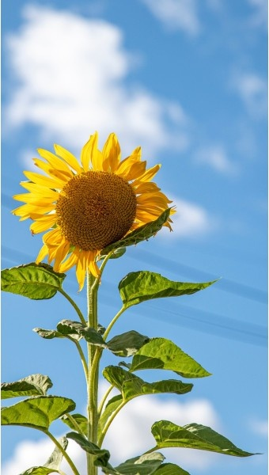
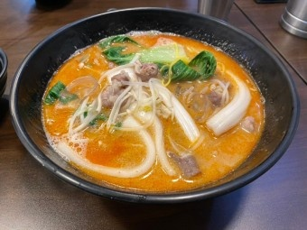

제가 좋아하는 꽃은 해바라기 입니다. 엄마가 좋아하시던 꽃이라서 옥상에서 직접 키우시는 것을 종종 보고 그 일을 돕곤 했습니다. 그래서 자연스럽게 저도 해바라기를 좋아하게 되었습니다. 꽃말은 '당신을 사랑합니다'등의 숭배,기다림을 뜻 합니다. 꽃말에서 느껴지는 로맨틱함도 좋지만 저는 해바라기 특유의 쨍한 노란색을 좋아합니다.
또 저는 요즘 마라탕을 즐겨 먹습니다. 먹고나면 배탈이 나서 항상 후회하지만 도저히 끊을 수 없는 맛이기 때문입니다. 혀가 얼얼해지고 목에 물파스를 바른 듯한 느낌은 마라탕 중독의 원인이기도 합니다.
